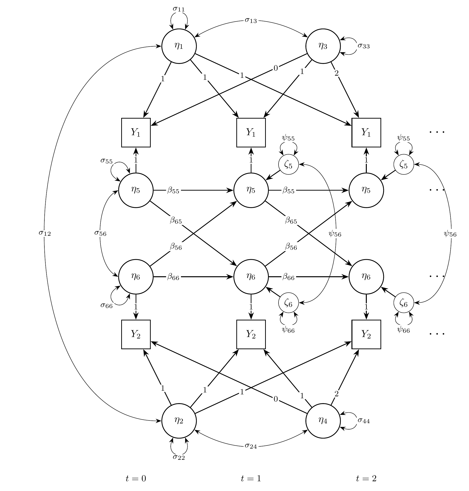
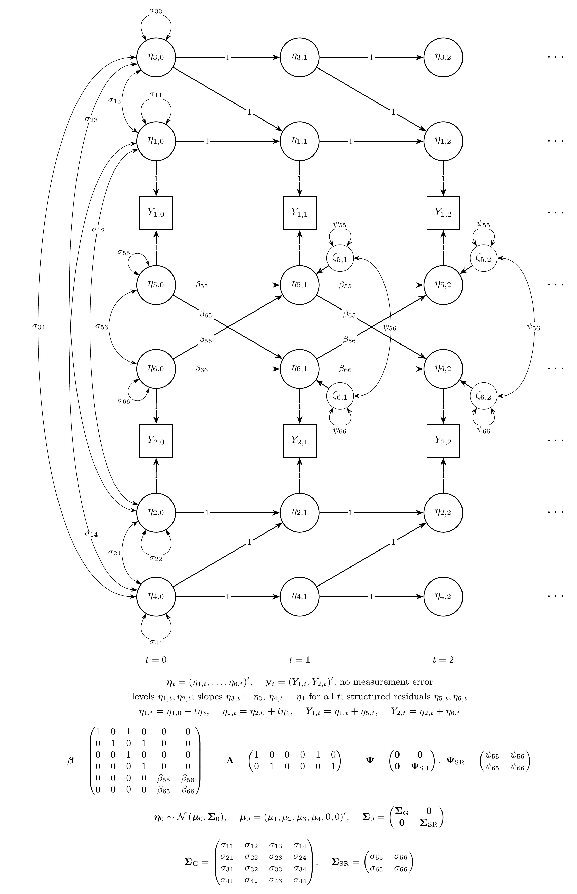

The Latent Curve Model with Structured Residuals
Ivan Jacob Agaloos Pesigan
2026-11-05
Source:vignettes/lcm-sr.Rmd
lcm-sr.RmdOverview
The latent curve model with structured residuals (LCM-SR) combines two ideas (Curran et al., 2014). Take alcohol use and depressive symptoms measured once a year in adolescents. Each adolescent follows a straight-line trajectory on each variable, with their own intercept and slope, as in the linear growth curve model. On each occasion, the adolescent is also above or below the trajectory, and these deviations, called the structured residuals, carry over to the next occasion and affect each other. The growth part describes how individuals differ in their long-term change; the residual part describes the within-person dynamics around it, with autoregressive and cross-lagged effects.
The LCM-SR is usually fitted as a structural equation model (SEM). It can also be written as a state space model by combining the state space forms of the linear growth curve model and of the vector autoregressive model: the levels and slopes of the two trajectories and the two residuals are latent states.
This tutorial does three things:
- It writes the LCM-SR as a state space model.
- It simulates data from the model with
SimSSMFixed(). - It fits the model to the simulated data as a state space model with
dynrandOpenMxand as a structural equation model (SEM) withlavaanandOpenMx, and compares every set of estimates with the values used to simulate the data.
No prior knowledge of state space models is needed. The vignette on the linear growth curve model explains the growth part in more detail.
Model
The measurement model is given by \left( \begin{array}{c} Y_{1_{i, t}} \\ Y_{2_{i, t}} \\ \end{array} \right) = \left( \begin{array}{cccccc} 1 & 0 & 0 & 0 & 1 & 0 \\ 0 & 1 & 0 & 0 & 0 & 1 \\ \end{array} \right) \left( \begin{array}{c} \eta_{1_{i, t}} \\ \eta_{2_{i, t}} \\ \eta_{3_{i, t}} \\ \eta_{4_{i, t}} \\ \eta_{5_{i, t}} \\ \eta_{6_{i, t}} \\ \end{array} \right) where Y_{1_{i, t}} and Y_{2_{i, t}} are the two observed variables at time t and individual i, \eta_{1_{i, t}} and \eta_{2_{i, t}} are the current levels of the two trajectories, \eta_{3_{i, t}} and \eta_{4_{i, t}} are their slopes, and \eta_{5_{i, t}} and \eta_{6_{i, t}} are the structured residuals.
In words, each observed score is the point on the individual’s trajectory plus the individual’s deviation from it on that occasion. As in most applications of the LCM-SR, there is no separate measurement error.
The dynamic structure is given by \left( \begin{array}{c} \eta_{1_{i, t}} \\ \eta_{2_{i, t}} \\ \eta_{3_{i, t}} \\ \eta_{4_{i, t}} \\ \eta_{5_{i, t}} \\ \eta_{6_{i, t}} \\ \end{array} \right) = \left( \begin{array}{cccccc} 1 & 0 & 1 & 0 & 0 & 0 \\ 0 & 1 & 0 & 1 & 0 & 0 \\ 0 & 0 & 1 & 0 & 0 & 0 \\ 0 & 0 & 0 & 1 & 0 & 0 \\ 0 & 0 & 0 & 0 & \beta_{55} & \beta_{56} \\ 0 & 0 & 0 & 0 & \beta_{65} & \beta_{66} \\ \end{array} \right) \left( \begin{array}{c} \eta_{1_{i, t - 1}} \\ \eta_{2_{i, t - 1}} \\ \eta_{3_{i, t - 1}} \\ \eta_{4_{i, t - 1}} \\ \eta_{5_{i, t - 1}} \\ \eta_{6_{i, t - 1}} \\ \end{array} \right) + \left( \begin{array}{c} 0 \\ 0 \\ 0 \\ 0 \\ \zeta_{5_{i, t}} \\ \zeta_{6_{i, t}} \\ \end{array} \right), \quad \mathrm{with} \quad \left( \begin{array}{c} \zeta_{5_{i, t}} \\ \zeta_{6_{i, t}} \\ \end{array} \right) \sim \mathcal{N} \left( \mathbf{0}, \left( \begin{array}{cc} \psi_{55} & \psi_{56} \\ \psi_{65} & \psi_{66} \\ \end{array} \right) \right) .
In words, the first four rows are the linear growth curve model for each variable: the level at each occasion is the previous level plus the slope, and the slope stays the same, with no process noise. The last two rows are a vector autoregressive model for the residuals: \beta_{55} and \beta_{66} are the autoregressive effects, how much of a deviation from the trajectory carries over to the next occasion, and \beta_{56} and \beta_{65} are the cross-lagged effects: \beta_{56} is the effect of a deviation in the second variable on the deviation in the first variable at the next occasion, and \beta_{65} the reverse. \psi_{55}, \psi_{66}, and \psi_{56} are the variances and covariance of the new part of the deviations.
The initial condition holds the means, variances, and covariances of the intercepts and slopes (the levels at the first occasion are the intercepts), and the variances and covariance of the residuals at the first occasion. The residuals have mean zero, because they are deviations from the trajectories, and are uncorrelated with the intercepts and slopes.
Diagrams

The LCM-SR as a path diagram, for the first three occasions (t = 0, 1, 2). The intercepts \eta_{1} and \eta_{2} load on every occasion with a loading of 1, and the slopes \eta_{3} and \eta_{4} with loadings 0, 1, 2, \ldots. The structured residuals \eta_{5} and \eta_{6} carry the dynamics: the horizontal arrows are the autoregressive effects and the diagonal arrows the cross-lagged effects. \zeta_{5} and \zeta_{6} are the new parts of the residuals on each occasion, with variances \psi_{55} and \psi_{66} and covariance \psi_{56}; \sigma_{55}, \sigma_{66}, and \sigma_{56} are the variances and covariance of the structured residuals at t = 0. A loop on a variable is its variance and a curved two-headed arrow a covariance. The intercepts and slopes have variances \sigma_{11} to \sigma_{44} and all covary; to keep the diagram readable, only the covariances \sigma_{12}, \sigma_{13}, and \sigma_{24} are drawn.

The same model in state space form, for the first three occasions,
with every element of the state drawn. In the state space form, \eta_{1, t} and \eta_{2, t} are the current levels of the
trajectories (the intercepts at t = 0):
the transition adds the slope to the level at each occasion, and the
slopes are states with a transition of 1, so \eta_{3, t} = \eta_{3} and \eta_{4, t} = \eta_{4} for all t. Each observed variable Y_{j, t} is its level plus its structured
residual, both with a loading of 1. Only the structured residuals \eta_{5, t} and \eta_{6, t} receive process noise, from t = 1 on. At t =
0, the initial condition \boldsymbol{\eta}_{0} \sim \mathcal{N} \left(
\boldsymbol{\mu}_{0}, \boldsymbol{\Sigma}_{0} \right) gives the
variances and covariances at t = 0: the
intercepts and slopes all covary, and the structured residuals covary
with each other but not with the growth part. Below the diagram, all the
latent variables at one occasion form the state vector \boldsymbol{\eta}_{t}, and all the observed
variables form \mathbf{y}_{t}: \boldsymbol{\beta} carries the state from one
occasion to the next, \boldsymbol{\Lambda} maps the state to the
observed variables, and \boldsymbol{\Psi} is the covariance matrix of
the process noise \boldsymbol{\zeta}_{t}.
SimSSMFixed() takes beta, lambda,
mu0, and the Cholesky factors of \boldsymbol{\Psi} and \boldsymbol{\Sigma}_{0} (psi_l
and sigma0_l); theta_l is a matrix of
zeros.
Data Generation
Notation
Let t = 5 be the number of time points and n = 5000 be the number of individuals.
Let the means and the covariance matrix of the intercepts and slopes, in the order intercept 1, intercept 2, slope 1, and slope 2, be
\left( \begin{array}{c} 2 \\ 1 \\ 0.5 \\ 0.3 \\ \end{array} \right) \quad \mathrm{and,} \quad \left( \begin{array}{cccc} 1 & 0.4 & 0.1 & 0.05 \\ 0.4 & 1 & 0.05 & 0.1 \\ 0.1 & 0.05 & 0.1 & 0.03 \\ 0.05 & 0.1 & 0.03 & 0.1 \\ \end{array} \right) .
Let the autoregressive and cross-lagged effects of the residuals and their process noise covariance matrix be
\left( \begin{array}{cc} \beta_{55} & \beta_{56} \\ \beta_{65} & \beta_{66} \\ \end{array} \right) = \left( \begin{array}{cc} 0.4 & 0.1 \\ 0.15 & 0.3 \\ \end{array} \right) \quad \mathrm{and,} \quad \left( \begin{array}{cc} \psi_{55} & \psi_{56} \\ \psi_{65} & \psi_{66} \\ \end{array} \right) = \left( \begin{array}{cc} 0.4 & 0.1 \\ 0.1 & 0.4 \\ \end{array} \right) .
The residuals start from their stationary distribution: their
covariance matrix at the first occasion is the one they keep at every
later occasion, computed with SSMCovEta(),
\left( \begin{array}{cc} \sigma_{55} & \sigma_{56} \\ \sigma_{65} & \sigma_{66} \\ \end{array} \right) = \left( \begin{array}{cc} 0.498 & 0.166 \\ 0.166 & 0.468 \\ \end{array} \right) .
R Function Arguments
The simulation functions take covariance matrices as lower triangular
Cholesky factors (the arguments ending in _l). Because the
intercepts and slopes have no process noise and there is no measurement
error, psi and theta have rows and columns of
zeros, and their Cholesky factors are built block by block.
n
#> [1] 5000
time
#> [1] 5
mu0
#> [1] 2.0 1.0 0.5 0.3 0.0 0.0
sigma0
#> [,1] [,2] [,3] [,4] [,5] [,6]
#> [1,] 1.00 0.40 0.10 0.05 0.0000000 0.0000000
#> [2,] 0.40 1.00 0.05 0.10 0.0000000 0.0000000
#> [3,] 0.10 0.05 0.10 0.03 0.0000000 0.0000000
#> [4,] 0.05 0.10 0.03 0.10 0.0000000 0.0000000
#> [5,] 0.00 0.00 0.00 0.00 0.4976100 0.1663655
#> [6,] 0.00 0.00 0.00 0.00 0.1663655 0.4683177
sigma0_l # sigma0_l <- t(chol(sigma0))
#> [,1] [,2] [,3] [,4] [,5] [,6]
#> [1,] 1.00 0.00000000 0.0000000 0.000000 0.0000000 0.0000000
#> [2,] 0.40 0.91651514 0.0000000 0.000000 0.0000000 0.0000000
#> [3,] 0.10 0.01091089 0.2998015 0.000000 0.0000000 0.0000000
#> [4,] 0.05 0.08728716 0.0802118 0.288872 0.0000000 0.0000000
#> [5,] 0.00 0.00000000 0.0000000 0.000000 0.7054148 0.0000000
#> [6,] 0.00 0.00000000 0.0000000 0.000000 0.2358406 0.6424149
alpha
#> [1] 0 0 0 0 0 0
beta
#> [,1] [,2] [,3] [,4] [,5] [,6]
#> [1,] 1 0 1 0 0.00 0.0
#> [2,] 0 1 0 1 0.00 0.0
#> [3,] 0 0 1 0 0.00 0.0
#> [4,] 0 0 0 1 0.00 0.0
#> [5,] 0 0 0 0 0.40 0.1
#> [6,] 0 0 0 0 0.15 0.3
psi
#> [,1] [,2] [,3] [,4] [,5] [,6]
#> [1,] 0 0 0 0 0.0 0.0
#> [2,] 0 0 0 0 0.0 0.0
#> [3,] 0 0 0 0 0.0 0.0
#> [4,] 0 0 0 0 0.0 0.0
#> [5,] 0 0 0 0 0.4 0.1
#> [6,] 0 0 0 0 0.1 0.4
psi_l
#> [,1] [,2] [,3] [,4] [,5] [,6]
#> [1,] 0 0 0 0 0.0000000 0.0000000
#> [2,] 0 0 0 0 0.0000000 0.0000000
#> [3,] 0 0 0 0 0.0000000 0.0000000
#> [4,] 0 0 0 0 0.0000000 0.0000000
#> [5,] 0 0 0 0 0.6324555 0.0000000
#> [6,] 0 0 0 0 0.1581139 0.6123724
nu
#> [1] 0 0
lambda
#> [,1] [,2] [,3] [,4] [,5] [,6]
#> [1,] 1 0 0 0 1 0
#> [2,] 0 1 0 0 0 1
theta
#> [,1] [,2]
#> [1,] 0 0
#> [2,] 0 0
theta_l
#> [,1] [,2]
#> [1,] 0 0
#> [2,] 0 0Visualizing the Dynamics Without Process Noise (n = 5 with Different Initial Condition)
Without process noise, the residuals shrink toward zero, so each trajectory approaches the individual’s straight line.


Using the SimSSMFixed Function from the
simStateSpace Package to Simulate Data
Now we add the process noise and simulate the full data set.
as.data.frame() returns the data in long format, one row
per individual and time point, with the columns id,
time, y1, and y2.
library(simStateSpace)
sim <- SimSSMFixed(
n = n,
time = time,
mu0 = mu0,
sigma0_l = sigma0_l,
alpha = alpha,
beta = beta,
psi_l = psi_l,
nu = nu,
lambda = lambda,
theta_l = theta_l,
type = 0
)
data <- as.data.frame(sim)
head(data)
#> id time y1 y2
#> 1 1 0 2.37388906 -0.1726676
#> 2 1 1 3.28150344 0.5992761
#> 3 1 2 3.16895848 0.5420004
#> 4 1 3 2.71113187 0.5169754
#> 5 1 4 3.48742737 1.2647509
#> 6 2 0 -0.01604581 -0.1810905
summary(data)
#> id time y1 y2
#> Min. : 1 Min. :0 Min. :-2.960 Min. :-6.1187
#> 1st Qu.:1251 1st Qu.:1 1st Qu.: 1.810 1st Qu.: 0.5105
#> Median :2500 Median :2 Median : 2.878 Median : 1.4937
#> Mean :2500 Mean :2 Mean : 2.987 Mean : 1.5868
#> 3rd Qu.:3750 3rd Qu.:3 3rd Qu.: 4.079 3rd Qu.: 2.5951
#> Max. :5000 Max. :4 Max. :11.177 Max. : 9.0230
plot(sim)

Model Fitting
The same simulated data are fitted as a state space model with
dynr and OpenMx and as a structural equation
model (SEM) with lavaan and OpenMx. All of
them estimate the parameters by maximum likelihood. The section
Population Values and Estimates compares their estimates with the
population values.
dynr
We fit the model with dynr, which estimates state space
models by maximum likelihood using the Kalman filter.
A dynr model is built from pieces that match the
equations above: the data, the initial condition, the measurement model,
the dynamic model, and the noise. Each parameter gets a name (for
example, beta_5_6 for \beta_{56}), and the same name used in two
places means one shared parameter. The starting values are set to the
population values for convenience; with real data, they would be rough
guesses.
Prepare Initial Condition
The means, variances, and covariances of the intercepts and slopes, and the variances and covariance of the residuals at the first occasion, are estimated. The means of the residuals and their covariances with the intercepts and slopes are fixed at zero.
params_sigma0 <- matrix(data = "fixed", nrow = p, ncol = p)
params_sigma0[1:4, 1:4] <- c(
"sigma0_1_1", "sigma0_2_1", "sigma0_3_1", "sigma0_4_1",
"sigma0_2_1", "sigma0_2_2", "sigma0_3_2", "sigma0_4_2",
"sigma0_3_1", "sigma0_3_2", "sigma0_3_3", "sigma0_4_3",
"sigma0_4_1", "sigma0_4_2", "sigma0_4_3", "sigma0_4_4"
)
params_sigma0[5:6, 5:6] <- c(
"sigma0_5_5", "sigma0_6_5",
"sigma0_6_5", "sigma0_6_6"
)
params_sigma0
#> [,1] [,2] [,3] [,4] [,5]
#> [1,] "sigma0_1_1" "sigma0_2_1" "sigma0_3_1" "sigma0_4_1" "fixed"
#> [2,] "sigma0_2_1" "sigma0_2_2" "sigma0_3_2" "sigma0_4_2" "fixed"
#> [3,] "sigma0_3_1" "sigma0_3_2" "sigma0_3_3" "sigma0_4_3" "fixed"
#> [4,] "sigma0_4_1" "sigma0_4_2" "sigma0_4_3" "sigma0_4_4" "fixed"
#> [5,] "fixed" "fixed" "fixed" "fixed" "sigma0_5_5"
#> [6,] "fixed" "fixed" "fixed" "fixed" "sigma0_6_5"
#> [,6]
#> [1,] "fixed"
#> [2,] "fixed"
#> [3,] "fixed"
#> [4,] "fixed"
#> [5,] "sigma0_6_5"
#> [6,] "sigma0_6_6"
dynr_initial <- dynr::prep.initial(
values.inistate = mu0,
params.inistate = c(
"mu0_1_1", "mu0_2_1", "mu0_3_1", "mu0_4_1", "fixed", "fixed"
),
values.inicov = sigma0,
params.inicov = params_sigma0
)Prepare Measurement Model
The loadings are fixed.
dynr_measurement <- dynr::prep.measurement(
values.load = lambda,
params.load = matrix(data = "fixed", nrow = 2, ncol = 6),
state.names = paste0("eta_", 1:6),
obs.names = c("y1", "y2")
)Prepare Dynamic Process
The first four formulas are the growth part, with no free parameters; the last two are the residual dynamics.
dynr_dynamics <- dynr::prep.formulaDynamics(
formula = list(
eta_1 ~ eta_1 + eta_3,
eta_2 ~ eta_2 + eta_4,
eta_3 ~ eta_3,
eta_4 ~ eta_4,
eta_5 ~ beta_5_5 * eta_5 + beta_5_6 * eta_6,
eta_6 ~ beta_6_5 * eta_5 + beta_6_6 * eta_6
),
startval = c(
beta_5_5 = beta[5, 5], beta_5_6 = beta[5, 6],
beta_6_5 = beta[6, 5], beta_6_6 = beta[6, 6]
),
isContinuousTime = FALSE
)Prepare Process Noise
Only the residuals have process noise. The measurement error is fixed at zero.
params_psi <- matrix(data = "fixed", nrow = p, ncol = p)
params_psi[5:6, 5:6] <- c(
"psi_5_5", "psi_6_5",
"psi_6_5", "psi_6_6"
)
dynr_noise <- dynr::prep.noise(
values.latent = psi,
params.latent = params_psi,
values.observed = theta,
params.observed = matrix(data = "fixed", nrow = 2, ncol = 2)
)Prepare the Model
The pieces are put together into one model. dynr writes
the model as C code to outfile and compiles it.
model <- dynr::dynr.model(
data = dynr_data,
initial = dynr_initial,
measurement = dynr_measurement,
dynamics = dynr_dynamics,
noise = dynr_noise,
outfile = "lcm-sr.c"
)The plot below shows the model equations with the parameter names.

Fit the Model
results <- dynr::dynr.cook(
model,
debug_flag = TRUE,
verbose = FALSE
)
#> [1] "Get ready!!!!"
#> using C compiler: ‘gcc (Ubuntu 15.2.0-16ubuntu1) 15.2.0’
#> Optimization function called.
#> Starting Hessian calculation ...
#> Finished Hessian calculation.
#> Original exit flag: 3
#> Modified exit flag: 3
#> Optimization terminated successfully: ftol_rel or ftol_abs was reached.
#> Original fitted parameters: 0.384417 0.09479975 0.153095 0.327768 -0.9403327
#> 0.2488269 -0.9749139 1.990267 0.9891803 0.4991346 0.2990298 0.0142687 0.3642215
#> 0.08682443 0.05249978 -0.1859039 0.01475746 0.09116218 -2.372037 0.2606286
#> -2.485062 -0.6950005 0.3588237 -0.8986049
#>
#> Transformed fitted parameters: 0.384417 0.09479975 0.153095 0.327768 0.3904979
#> 0.09716638 0.4014024 1.990267 0.9891803 0.4991346 0.2990298 1.014371 0.3694558
#> 0.08807218 0.05325425 0.9649171 0.04433169 0.09509317 0.1011182 0.03005504
#> 0.0993539 0.4990742 0.1790796 0.4713953
#>
#> Doing end processing
#> Successful trial
#> Total Time: 3.40476
#> Backend Time: 3.398337Summary
The summary lists each estimate with its standard error, t value, confidence interval, and p value.
summary(results)
#> Coefficients:
#> Estimate Std. Error t value ci.lower ci.upper Pr(>|t|)
#> beta_5_5 0.384417 0.020962 18.339 0.343333 0.425501 < 0.0000000000000002
#> beta_5_6 0.094800 0.015378 6.165 0.064660 0.124939 0.00000000036
#> beta_6_5 0.153095 0.016160 9.474 0.121423 0.184767 < 0.0000000000000002
#> beta_6_6 0.327768 0.019410 16.886 0.289725 0.365811 < 0.0000000000000002
#> psi_5_5 0.390498 0.008167 47.815 0.374491 0.406505 < 0.0000000000000002
#> psi_6_5 0.097166 0.005984 16.238 0.085438 0.108895 < 0.0000000000000002
#> psi_6_6 0.401402 0.007883 50.921 0.385952 0.416853 < 0.0000000000000002
#> mu0_1_1 1.990267 0.016933 117.541 1.957080 2.023454 < 0.0000000000000002
#> mu0_2_1 0.989180 0.016484 60.009 0.956873 1.021488 < 0.0000000000000002
#> mu0_3_1 0.499135 0.005613 88.917 0.488132 0.510137 < 0.0000000000000002
#> mu0_4_1 0.299030 0.005557 53.816 0.288139 0.309921 < 0.0000000000000002
#> sigma0_1_1 1.014371 0.042257 24.005 0.931549 1.097193 < 0.0000000000000002
#> sigma0_2_1 0.369456 0.032319 11.432 0.306112 0.432800 < 0.0000000000000002
#> sigma0_3_1 0.088072 0.009661 9.116 0.069137 0.107008 < 0.0000000000000002
#> sigma0_4_1 0.053254 0.008552 6.227 0.036492 0.070017 0.00000000024
#> sigma0_2_2 0.964917 0.038300 25.194 0.889850 1.039984 < 0.0000000000000002
#> sigma0_3_2 0.044332 0.008521 5.203 0.027631 0.061032 0.00000009893
#> sigma0_4_2 0.095093 0.009053 10.504 0.077349 0.112837 < 0.0000000000000002
#> sigma0_3_3 0.101118 0.004092 24.712 0.093098 0.109138 < 0.0000000000000002
#> sigma0_4_3 0.030055 0.003052 9.849 0.024074 0.036036 < 0.0000000000000002
#> sigma0_4_4 0.099354 0.003920 25.348 0.091672 0.107036 < 0.0000000000000002
#> sigma0_5_5 0.499074 0.034694 14.385 0.431074 0.567074 < 0.0000000000000002
#> sigma0_6_5 0.179080 0.027121 6.603 0.125923 0.232236 0.00000000002
#> sigma0_6_6 0.471395 0.031358 15.033 0.409934 0.532856 < 0.0000000000000002
#>
#> beta_5_5 ***
#> beta_5_6 ***
#> beta_6_5 ***
#> beta_6_6 ***
#> psi_5_5 ***
#> psi_6_5 ***
#> psi_6_6 ***
#> mu0_1_1 ***
#> mu0_2_1 ***
#> mu0_3_1 ***
#> mu0_4_1 ***
#> sigma0_1_1 ***
#> sigma0_2_1 ***
#> sigma0_3_1 ***
#> sigma0_4_1 ***
#> sigma0_2_2 ***
#> sigma0_3_2 ***
#> sigma0_4_2 ***
#> sigma0_3_3 ***
#> sigma0_4_3 ***
#> sigma0_4_4 ***
#> sigma0_5_5 ***
#> sigma0_6_5 ***
#> sigma0_6_6 ***
#> ---
#> Signif. codes: 0 '***' 0.001 '**' 0.01 '*' 0.05 '.' 0.1 ' ' 1
#>
#> -2 log-likelihood value at convergence = 127121.91
#> AIC = 127169.91
#> BIC = 127364.95OpenMx: State Space Model
OpenMx (Neale et al.,
2016) fits the same state space model with its own Kalman filter
(OpenMx::mxExpectationStateSpace(); Hunter (2018)). Its matrices have the names used
in engineering: A is the transition matrix \boldsymbol{\beta}, B holds the
intercepts of the dynamic model, C is the loading matrix
\boldsymbol{\Lambda}, D
holds the intercepts of the measurement model, Q is the
process noise covariance matrix, and R is the measurement
error covariance matrix. The parameter labels are the dynr names; as in
dynr, a label used in two places is one shared parameter, and the
starting values are the population values.
Two details differ from dynr. First, OpenMx reads the data as a single time series. To start the filter again at the first occasion of every individual, each individual gets a group, and all groups use the matrices of one parent model, so every individual has the same parameters. Second, OpenMx starts the filter one occasion before the first row, so the first row has the state mean \mathbf{A} \mathbf{x}_{0} + \mathbf{B} \mathbf{u} and the state covariance \mathbf{A} \mathbf{P}_{0} \mathbf{A}^{\prime} + \mathbf{Q}, with the constant input \mathbf{u} = 1. Setting \mathbf{x}_{0} = \mathbf{A}^{-1} \left( \boldsymbol{\mu}_{0} - \mathbf{B} \mathbf{u} \right) and \mathbf{P}_{0} = \mathbf{A}^{-1} \left( \boldsymbol{\Sigma}_{0} - \mathbf{Q} \right) \left( \mathbf{A}^{-1} \right)^{\prime} gives the first occasion the initial condition of the model, so the likelihood is the same as in dynr. This needs an invertible \mathbf{A}, which holds here.
The two helper functions below are the same in every vignette of the
package. MxMat() makes an OpenMx matrix from values and
dynr-style labels ("fixed" marks a fixed element), and
FitMxSSM() builds the groups and fits the model.
MxMat <- function(values, labels, name) {
values <- as.matrix(values)
labels <- matrix(
data = labels,
nrow = nrow(values),
ncol = ncol(values)
)
free <- labels != "fixed"
labels[!free] <- NA
OpenMx::mxMatrix(
type = "Full",
values = values,
free = free,
labels = labels,
name = name
)
}
FitMxSSM <- function(data, observed, matrices, name) {
# the groups refer to the matrices of the parent model
shared <- function(x) {
paste0(name, ".", x)
}
expectation <- OpenMx::mxExpectationStateSpace(
A = shared("A"),
B = shared("B"),
C = shared("C"),
D = shared("D"),
Q = shared("Q"),
R = shared("R"),
x0 = shared("x0"),
P0 = shared("P0"),
u = shared("u")
)
# OpenMx needs the names of the observed variables and of the states on C
for (i in seq_along(matrices)) {
if (matrices[[i]]$name == "C") {
dimnames(matrices[[i]]) <- list(
observed,
paste0("eta_", seq_len(ncol(matrices[[i]]$values)))
)
}
}
persons <- split(
x = data[, observed, drop = FALSE],
f = data[, "id"]
)
groups <- paste0("id_", names(persons))
submodels <- lapply(
X = seq_along(persons),
FUN = function(i) {
OpenMx::mxModel(
name = groups[i],
expectation,
OpenMx::mxFitFunctionML(),
OpenMx::mxData(
observed = persons[[i]],
type = "raw"
)
)
}
)
model <- OpenMx::mxModel(
name = name,
matrices,
OpenMx::mxMatrix(
type = "Unit",
nrow = 1,
ncol = 1,
name = "u"
),
# the first occasion gets the initial condition of the model
OpenMx::mxAlgebra(
expression = solve(A) %*% (mu0 - B %*% u),
name = "x0"
),
OpenMx::mxAlgebra(
expression = solve(A) %*% (sigma0 - Q) %*% t(solve(A)),
name = "P0"
),
submodels,
OpenMx::mxFitFunctionMultigroup(groups = groups)
)
# retries from perturbed starting values only if the first run fails
OpenMx::mxTryHard(
model = model,
extraTries = 5,
silent = TRUE
)
}The matrices of the model, with the dynr labels
(params_sigma0 and params_psi are the label
matrices made for dynr). There is no measurement error (R
is zero).
labels_beta <- matrix(data = "fixed", nrow = p, ncol = p)
labels_beta[5:6, 5:6] <- c("beta_5_5", "beta_6_5", "beta_5_6", "beta_6_6")
mx_matrices <- list(
MxMat(values = beta, labels = labels_beta, name = "A"),
MxMat(values = alpha, labels = "fixed", name = "B"),
MxMat(values = lambda, labels = "fixed", name = "C"),
MxMat(values = nu, labels = "fixed", name = "D"),
MxMat(values = psi, labels = params_psi, name = "Q"),
MxMat(values = theta, labels = "fixed", name = "R"),
MxMat(
values = mu0,
labels = c(
"mu0_1_1", "mu0_2_1", "mu0_3_1", "mu0_4_1", "fixed", "fixed"
),
name = "mu0"
),
MxMat(values = sigma0, labels = params_sigma0, name = "sigma0")
)fit_mx_ssm <- FitMxSSM(
data = data,
observed = c("y1", "y2"),
matrices = mx_matrices,
name = "lcm_sr"
)
#>
Beginning initial fit attempt
Fit attempt 0, fit=127121.905417101, new current best! (was 127140.637002899)
#>
#> Solution found! Final fit=127121.91 (started at 127140.64) (1 attempt(s): 1 valid, 0 errors)
summary(fit_mx_ssm)
#> Summary of lcm_sr
#>
#> free parameters:
#> name matrix row col Estimate Std.Error A
#> 1 beta_5_5 A 5 5 0.38508305 0.020988727
#> 2 beta_6_5 A 6 5 0.15377680 0.016178499
#> 3 beta_5_6 A 5 6 0.09546418 0.015384829
#> 4 beta_6_6 A 6 6 0.32839423 0.019480947
#> 5 psi_5_5 Q 5 5 0.39078647 0.008178950
#> 6 psi_6_5 Q 6 5 0.09745437 0.005993483
#> 7 psi_6_6 Q 6 6 0.40168283 0.007907617
#> 8 mu0_1_1 mu0 1 1 1.99034260 0.016932161
#> 9 mu0_2_1 mu0 2 1 0.98925223 0.016470357
#> 10 mu0_3_1 mu0 3 1 0.49921095 0.005613790
#> 11 mu0_4_1 mu0 4 1 0.29910688 0.005556419
#> 12 sigma0_1_1 sigma0 1 1 1.01280945 0.042267658
#> 13 sigma0_2_1 sigma0 2 1 0.36793304 0.032545818
#> 14 sigma0_3_1 sigma0 3 1 0.08844527 0.009697372
#> 15 sigma0_4_1 sigma0 4 1 0.05362276 0.008583419
#> 16 sigma0_2_2 sigma0 2 2 0.96339690 0.038860029
#> 17 sigma0_3_2 sigma0 3 2 0.04472970 0.008541466
#> 18 sigma0_4_2 sigma0 4 2 0.09548767 0.009089283
#> 19 sigma0_3_3 sigma0 3 3 0.10100716 0.004107999
#> 20 sigma0_4_3 sigma0 4 3 0.02994125 0.003069591
#> 21 sigma0_4_4 sigma0 4 4 0.09924228 0.003933967
#> 22 sigma0_5_5 sigma0 5 5 0.50055428 0.034960357
#> 23 sigma0_6_5 sigma0 6 5 0.18056852 0.027323310
#> 24 sigma0_6_6 sigma0 6 6 0.47288815 0.031625373
#>
#> Model Statistics:
#> | Parameters | Degrees of Freedom | Fit (-2lnL units)
#> Model: 24 49976 127121.9
#> Saturated: NA NA NA
#> Independence: NA NA NA
#> Number of observations/statistics: 25000/50000
#>
#> Information Criteria:
#> | df Penalty | Parameters Penalty | Sample-Size Adjusted
#> AIC: 27169.91 127169.9 127170.0
#> BIC: -378966.61 127364.9 127288.7
#> To get additional fit indices, see help(mxRefModels)
#> timestamp: 2026-11-05 05:22:19
#> Wall clock time: 212.6431 secs
#> optimizer: SLSQP
#> OpenMx version number: 2.22.11
#> Need help? See help(mxSummary)lavaan: Structural Equation Model
The same model in SEM form, fitted with lavaan, should
give nearly the same estimates. In SEM, each variable at each occasion
is a separate observed variable in one row per individual (wide format).
Each variable has an intercept factor with loadings of 1, a slope factor
with loadings 0, 1, 2, 3, and 4, and one residual factor per occasion
with a loading of 1.
Wide Data Set
as.data.frame() with long = FALSE returns
the data in wide format.
data_wide <- as.data.frame(sim, long = FALSE)
head(data_wide)
#> id y1_0 y2_0 y1_1 y2_1 y1_2 y2_2
#> 1 1 2.37388906 -0.17266755503 3.2815034 0.5992761 3.168958 0.5420004
#> 2 2 -0.01604581 -0.18109050141 0.6828646 -0.1135152 1.700621 -1.8224976
#> 3 3 3.26382925 1.52047814091 5.8037340 2.7814303 6.188715 3.4654056
#> 4 4 1.94339676 -0.13444204172 1.9723843 -0.1755396 1.899682 0.9515669
#> 5 5 0.87525257 -2.33329417436 1.9247151 -0.3515431 2.077691 -0.2428386
#> 6 6 0.04156401 -0.00005003437 0.5462923 1.5357655 1.735087 1.9415441
#> y1_3 y2_3 y1_4 y2_4
#> 1 2.711132 0.5169754 3.487427 1.2647509
#> 2 2.239767 -1.1882699 2.280529 -3.1482622
#> 3 7.522857 4.3100330 7.272734 5.4493969
#> 4 1.482315 -0.5940969 1.966155 -0.1135456
#> 5 2.488611 0.2684330 2.861655 0.1558327
#> 6 2.369504 3.4956264 2.910286 5.2712928Model
The model has the same structure for every occasion, so we write it
with paste0(). The parameter labels match the dynr names.
Giving the residual effects and the process noise the same label on
every occasion constrains them to be equal over time, as in the state
space model.
waves <- 0:(time - 1)
now <- waves[-1]
before <- waves[-time]
model <- paste(
c(
"# growth factors",
paste0("i1 =~ ", paste0("1 * y1_", waves, collapse = " + ")),
paste0("i2 =~ ", paste0("1 * y2_", waves, collapse = " + ")),
paste0("s1 =~ ", paste0(waves, " * y1_", waves, collapse = " + ")),
paste0("s2 =~ ", paste0(waves, " * y2_", waves, collapse = " + ")),
"# structured residuals",
paste0("r1_", waves, " =~ 1 * y1_", waves),
paste0("r2_", waves, " =~ 1 * y2_", waves),
"# autoregressive and cross-lagged effects of the residuals",
paste0(
"r1_", now, " ~ beta_5_5 * r1_", before, " + beta_5_6 * r2_", before
),
paste0(
"r2_", now, " ~ beta_6_5 * r1_", before, " + beta_6_6 * r2_", before
),
"# residuals at the first occasion",
"r1_0 ~~ sigma0_5_5 * r1_0",
"r2_0 ~~ sigma0_6_6 * r2_0",
"r1_0 ~~ sigma0_6_5 * r2_0",
"# process noise at later occasions",
paste0("r1_", now, " ~~ psi_5_5 * r1_", now),
paste0("r2_", now, " ~~ psi_6_6 * r2_", now),
paste0("r1_", now, " ~~ psi_6_5 * r2_", now),
"# growth factors: means",
"i1 ~ mu0_1_1 * 1",
"i2 ~ mu0_2_1 * 1",
"s1 ~ mu0_3_1 * 1",
"s2 ~ mu0_4_1 * 1",
"# growth factors: variances and covariances",
"i1 ~~ sigma0_1_1 * i1",
"i2 ~~ sigma0_2_2 * i2",
"s1 ~~ sigma0_3_3 * s1",
"s2 ~~ sigma0_4_4 * s2",
"i1 ~~ sigma0_2_1 * i2",
"i1 ~~ sigma0_3_1 * s1",
"i1 ~~ sigma0_4_1 * s2",
"i2 ~~ sigma0_3_2 * s1",
"i2 ~~ sigma0_4_2 * s2",
"s1 ~~ sigma0_4_3 * s2",
"# growth factors are uncorrelated with the first residuals",
paste0(c("i1", "i2", "s1", "s2"), " ~~ 0 * r1_0 + 0 * r2_0"),
"# no measurement error and no observed intercepts",
paste0("y1_", waves, " ~~ 0 * y1_", waves),
paste0("y2_", waves, " ~~ 0 * y2_", waves),
paste0("y1_", waves, " ~ 0 * 1"),
paste0("y2_", waves, " ~ 0 * 1")
),
collapse = "\n"
)
cat(model)
#> # growth factors
#> i1 =~ 1 * y1_0 + 1 * y1_1 + 1 * y1_2 + 1 * y1_3 + 1 * y1_4
#> i2 =~ 1 * y2_0 + 1 * y2_1 + 1 * y2_2 + 1 * y2_3 + 1 * y2_4
#> s1 =~ 0 * y1_0 + 1 * y1_1 + 2 * y1_2 + 3 * y1_3 + 4 * y1_4
#> s2 =~ 0 * y2_0 + 1 * y2_1 + 2 * y2_2 + 3 * y2_3 + 4 * y2_4
#> # structured residuals
#> r1_0 =~ 1 * y1_0
#> r1_1 =~ 1 * y1_1
#> r1_2 =~ 1 * y1_2
#> r1_3 =~ 1 * y1_3
#> r1_4 =~ 1 * y1_4
#> r2_0 =~ 1 * y2_0
#> r2_1 =~ 1 * y2_1
#> r2_2 =~ 1 * y2_2
#> r2_3 =~ 1 * y2_3
#> r2_4 =~ 1 * y2_4
#> # autoregressive and cross-lagged effects of the residuals
#> r1_1 ~ beta_5_5 * r1_0 + beta_5_6 * r2_0
#> r1_2 ~ beta_5_5 * r1_1 + beta_5_6 * r2_1
#> r1_3 ~ beta_5_5 * r1_2 + beta_5_6 * r2_2
#> r1_4 ~ beta_5_5 * r1_3 + beta_5_6 * r2_3
#> r2_1 ~ beta_6_5 * r1_0 + beta_6_6 * r2_0
#> r2_2 ~ beta_6_5 * r1_1 + beta_6_6 * r2_1
#> r2_3 ~ beta_6_5 * r1_2 + beta_6_6 * r2_2
#> r2_4 ~ beta_6_5 * r1_3 + beta_6_6 * r2_3
#> # residuals at the first occasion
#> r1_0 ~~ sigma0_5_5 * r1_0
#> r2_0 ~~ sigma0_6_6 * r2_0
#> r1_0 ~~ sigma0_6_5 * r2_0
#> # process noise at later occasions
#> r1_1 ~~ psi_5_5 * r1_1
#> r1_2 ~~ psi_5_5 * r1_2
#> r1_3 ~~ psi_5_5 * r1_3
#> r1_4 ~~ psi_5_5 * r1_4
#> r2_1 ~~ psi_6_6 * r2_1
#> r2_2 ~~ psi_6_6 * r2_2
#> r2_3 ~~ psi_6_6 * r2_3
#> r2_4 ~~ psi_6_6 * r2_4
#> r1_1 ~~ psi_6_5 * r2_1
#> r1_2 ~~ psi_6_5 * r2_2
#> r1_3 ~~ psi_6_5 * r2_3
#> r1_4 ~~ psi_6_5 * r2_4
#> # growth factors: means
#> i1 ~ mu0_1_1 * 1
#> i2 ~ mu0_2_1 * 1
#> s1 ~ mu0_3_1 * 1
#> s2 ~ mu0_4_1 * 1
#> # growth factors: variances and covariances
#> i1 ~~ sigma0_1_1 * i1
#> i2 ~~ sigma0_2_2 * i2
#> s1 ~~ sigma0_3_3 * s1
#> s2 ~~ sigma0_4_4 * s2
#> i1 ~~ sigma0_2_1 * i2
#> i1 ~~ sigma0_3_1 * s1
#> i1 ~~ sigma0_4_1 * s2
#> i2 ~~ sigma0_3_2 * s1
#> i2 ~~ sigma0_4_2 * s2
#> s1 ~~ sigma0_4_3 * s2
#> # growth factors are uncorrelated with the first residuals
#> i1 ~~ 0 * r1_0 + 0 * r2_0
#> i2 ~~ 0 * r1_0 + 0 * r2_0
#> s1 ~~ 0 * r1_0 + 0 * r2_0
#> s2 ~~ 0 * r1_0 + 0 * r2_0
#> # no measurement error and no observed intercepts
#> y1_0 ~~ 0 * y1_0
#> y1_1 ~~ 0 * y1_1
#> y1_2 ~~ 0 * y1_2
#> y1_3 ~~ 0 * y1_3
#> y1_4 ~~ 0 * y1_4
#> y2_0 ~~ 0 * y2_0
#> y2_1 ~~ 0 * y2_1
#> y2_2 ~~ 0 * y2_2
#> y2_3 ~~ 0 * y2_3
#> y2_4 ~~ 0 * y2_4
#> y1_0 ~ 0 * 1
#> y1_1 ~ 0 * 1
#> y1_2 ~ 0 * 1
#> y1_3 ~ 0 * 1
#> y1_4 ~ 0 * 1
#> y2_0 ~ 0 * 1
#> y2_1 ~ 0 * 1
#> y2_2 ~ 0 * 1
#> y2_3 ~ 0 * 1
#> y2_4 ~ 0 * 1lavaan::lavaan() adds nothing to the model by itself, so
every parameter above is exactly the one written.
fit_lavaan <- lavaan::lavaan(
model = model,
data = data_wide
)
lavaan::summary(fit_lavaan)
#> lavaan 0.7-3 ended normally after 64 iterations
#>
#> Estimator ML
#> Optimization method NLMINB
#> Number of model parameters 45
#> Number of equality constraints 21
#>
#> Number of observations 5000
#>
#> Model Test User Model:
#>
#> Test statistic 41.457
#> Degrees of freedom 41
#> P-value (Chi-square) 0.451
#>
#> Browne's residual (NT model-based) test
#> Test statistic 41.357
#> Degrees of freedom 41
#> P-value (Chi-square) 0.455
#>
#> Parameter Estimates:
#>
#> Standard errors Standard
#> Information Expected
#> Information saturated (h1) model Structured
#>
#> Latent Variables:
#> Estimate Std.Err z-value P(>|z|)
#> i1 =~
#> y1_0 1.000
#> y1_1 1.000
#> y1_2 1.000
#> y1_3 1.000
#> y1_4 1.000
#> i2 =~
#> y2_0 1.000
#> y2_1 1.000
#> y2_2 1.000
#> y2_3 1.000
#> y2_4 1.000
#> s1 =~
#> y1_0 0.000
#> y1_1 1.000
#> y1_2 2.000
#> y1_3 3.000
#> y1_4 4.000
#> s2 =~
#> y2_0 0.000
#> y2_1 1.000
#> y2_2 2.000
#> y2_3 3.000
#> y2_4 4.000
#> r1_0 =~
#> y1_0 1.000
#> r1_1 =~
#> y1_1 1.000
#> r1_2 =~
#> y1_2 1.000
#> r1_3 =~
#> y1_3 1.000
#> r1_4 =~
#> y1_4 1.000
#> r2_0 =~
#> y2_0 1.000
#> r2_1 =~
#> y2_1 1.000
#> r2_2 =~
#> y2_2 1.000
#> r2_3 =~
#> y2_3 1.000
#> r2_4 =~
#> y2_4 1.000
#>
#> Regressions:
#> Estimate Std.Err z-value P(>|z|)
#> r1_1 ~
#> r1_0 (b_5_5) 0.385 0.021 18.365 0.000
#> r2_0 (b_5_6) 0.095 0.015 6.194 0.000
#> r1_2 ~
#> r1_1 (b_5_5) 0.385 0.021 18.365 0.000
#> r2_1 (b_5_6) 0.095 0.015 6.194 0.000
#> r1_3 ~
#> r1_2 (b_5_5) 0.385 0.021 18.365 0.000
#> r2_2 (b_5_6) 0.095 0.015 6.194 0.000
#> r1_4 ~
#> r1_3 (b_5_5) 0.385 0.021 18.365 0.000
#> r2_3 (b_5_6) 0.095 0.015 6.194 0.000
#> r2_1 ~
#> r1_0 (b_6_5) 0.154 0.016 9.504 0.000
#> r2_0 (b_6_6) 0.328 0.019 16.861 0.000
#> r2_2 ~
#> r1_1 (b_6_5) 0.154 0.016 9.504 0.000
#> r2_1 (b_6_6) 0.328 0.019 16.861 0.000
#> r2_3 ~
#> r1_2 (b_6_5) 0.154 0.016 9.504 0.000
#> r2_2 (b_6_6) 0.328 0.019 16.861 0.000
#> r2_4 ~
#> r1_3 (b_6_5) 0.154 0.016 9.504 0.000
#> r2_3 (b_6_6) 0.328 0.019 16.861 0.000
#>
#> Covariances:
#> Estimate Std.Err z-value P(>|z|)
#> r1_0 ~~
#> r2_0 (s0_6) 0.181 0.028 6.425 0.000
#> .r1_1 ~~
#> .r2_1 (p_6_) 0.097 0.006 16.205 0.000
#> .r1_2 ~~
#> .r2_2 (p_6_) 0.097 0.006 16.205 0.000
#> .r1_3 ~~
#> .r2_3 (p_6_) 0.097 0.006 16.205 0.000
#> .r1_4 ~~
#> .r2_4 (p_6_) 0.097 0.006 16.205 0.000
#> i1 ~~
#> i2 (s0_2) 0.368 0.033 11.062 0.000
#> s1 (s0_3_1) 0.088 0.010 8.936 0.000
#> s2 (s0_4_1) 0.054 0.009 6.168 0.000
#> i2 ~~
#> s1 (s0_3_2) 0.045 0.009 5.149 0.000
#> s2 (s0_4_2) 0.095 0.009 10.371 0.000
#> s1 ~~
#> s2 (s0_4_3) 0.030 0.003 9.628 0.000
#> i1 ~~
#> r1_0 0.000
#> r2_0 0.000
#> i2 ~~
#> r1_0 0.000
#> r2_0 0.000
#> s1 ~~
#> r1_0 0.000
#> r2_0 0.000
#> s2 ~~
#> r1_0 0.000
#> r2_0 0.000
#>
#> Intercepts:
#> Estimate Std.Err z-value P(>|z|)
#> i1 (m0_1) 1.990 0.017 117.548 0.000
#> i2 (m0_2) 0.989 0.016 60.023 0.000
#> s1 (m0_3) 0.499 0.006 88.932 0.000
#> s2 (m0_4) 0.299 0.006 53.834 0.000
#> .y1_0 0.000
#> .y1_1 0.000
#> .y1_2 0.000
#> .y1_3 0.000
#> .y1_4 0.000
#> .y2_0 0.000
#> .y2_1 0.000
#> .y2_2 0.000
#> .y2_3 0.000
#> .y2_4 0.000
#>
#> Variances:
#> Estimate Std.Err z-value P(>|z|)
#> r1_0 (s0_5) 0.501 0.036 13.876 0.000
#> r2_0 (s0_6) 0.473 0.032 14.687 0.000
#> .r1_1 (p_5_) 0.391 0.008 47.825 0.000
#> .r1_2 (p_5_) 0.391 0.008 47.825 0.000
#> .r1_3 (p_5_) 0.391 0.008 47.825 0.000
#> .r1_4 (p_5_) 0.391 0.008 47.825 0.000
#> .r2_1 (p_6_) 0.402 0.008 50.775 0.000
#> .r2_2 (p_6_) 0.402 0.008 50.775 0.000
#> .r2_3 (p_6_) 0.402 0.008 50.775 0.000
#> .r2_4 (p_6_) 0.402 0.008 50.775 0.000
#> i1 (s0_1) 1.013 0.043 23.405 0.000
#> i2 (s0_2) 0.963 0.039 24.440 0.000
#> s1 (s0_3) 0.101 0.004 24.312 0.000
#> s2 (s0_4) 0.099 0.004 25.054 0.000
#> .y1_0 0.000
#> .y1_1 0.000
#> .y1_2 0.000
#> .y1_3 0.000
#> .y1_4 0.000
#> .y2_0 0.000
#> .y2_1 0.000
#> .y2_2 0.000
#> .y2_3 0.000
#> .y2_4 0.000OpenMx: Structural Equation Model
The same SEM in OpenMx, written with
OpenMx::mxPath() on the wide data. One-headed arrows are
loadings and regressions, two-headed arrows are variances and
covariances, and arrows from "one" are means. A path that
is not written is fixed at zero, so the zero residual variances,
covariances, and intercepts of the lavaan model need no lines here. The
labels are the dynr names, and the starting values are the population
values.
connect = "unique.pairs" adds every variance and
covariance among the growth factors; their labels and values are the
lower triangle of the first four rows and columns of the label matrix
and of \boldsymbol{\Sigma}_{0}, in the
same order.
waves <- 0:(time - 1)
y1 <- paste0("y1_", waves)
y2 <- paste0("y2_", waves)
r1 <- paste0("r1_", waves)
r2 <- paste0("r2_", waves)
growth <- c("i1", "i2", "s1", "s2")
labels_growth <- params_sigma0[1:4, 1:4]
sigma_growth <- sigma0[1:4, 1:4]
mx_sem <- OpenMx::mxModel(
name = "lcm_sr_sem",
type = "RAM",
manifestVars = c(y1, y2),
latentVars = c(growth, r1, r2),
OpenMx::mxData(observed = data_wide[, c(y1, y2)], type = "raw"),
# growth factors
OpenMx::mxPath(from = "i1", to = y1, free = FALSE, values = 1),
OpenMx::mxPath(from = "i2", to = y2, free = FALSE, values = 1),
OpenMx::mxPath(from = "s1", to = y1, free = FALSE, values = waves),
OpenMx::mxPath(from = "s2", to = y2, free = FALSE, values = waves),
# structured residuals
OpenMx::mxPath(from = r1, to = y1, free = FALSE, values = 1),
OpenMx::mxPath(from = r2, to = y2, free = FALSE, values = 1),
# autoregressive and cross-lagged effects of the residuals
OpenMx::mxPath(
from = r1[-time], to = r1[-1], labels = "beta_5_5", values = beta[5, 5]
),
OpenMx::mxPath(
from = r2[-time], to = r1[-1], labels = "beta_5_6", values = beta[5, 6]
),
OpenMx::mxPath(
from = r1[-time], to = r2[-1], labels = "beta_6_5", values = beta[6, 5]
),
OpenMx::mxPath(
from = r2[-time], to = r2[-1], labels = "beta_6_6", values = beta[6, 6]
),
# residuals at the first occasion
OpenMx::mxPath(
from = c("r1_0", "r2_0", "r1_0"),
to = c("r1_0", "r2_0", "r2_0"),
arrows = 2,
labels = c("sigma0_5_5", "sigma0_6_6", "sigma0_6_5"),
values = c(sigma0[5, 5], sigma0[6, 6], sigma0[6, 5])
),
# process noise at later occasions
OpenMx::mxPath(
from = r1[-1], arrows = 2, labels = "psi_5_5", values = psi[5, 5]
),
OpenMx::mxPath(
from = r2[-1], arrows = 2, labels = "psi_6_6", values = psi[6, 6]
),
OpenMx::mxPath(
from = r1[-1],
to = r2[-1],
arrows = 2,
labels = "psi_6_5",
values = psi[6, 5]
),
# growth factors: means
OpenMx::mxPath(
from = "one",
to = growth,
labels = c("mu0_1_1", "mu0_2_1", "mu0_3_1", "mu0_4_1"),
values = mu0[1:4]
),
# growth factors: variances and covariances
OpenMx::mxPath(
from = growth,
arrows = 2,
connect = "unique.pairs",
labels = labels_growth[lower.tri(labels_growth, diag = TRUE)],
values = sigma_growth[lower.tri(sigma_growth, diag = TRUE)]
)
)
fit_mx_sem <- OpenMx::mxRun(
model = mx_sem,
silent = TRUE
)
summary(fit_mx_sem)
#> Summary of lcm_sr_sem
#>
#> free parameters:
#> name matrix row col Estimate Std.Error A
#> 1 beta_5_5 A r1_1 r1_0 0.38508306 0.021133060
#> 2 beta_6_5 A r2_1 r1_0 0.15377680 0.016244283
#> 3 beta_5_6 A r1_1 r2_0 0.09546419 0.015449083
#> 4 beta_6_6 A r2_1 r2_0 0.32839424 0.019514514
#> 5 sigma0_1_1 S i1 i1 1.01280944 0.042845107
#> 6 sigma0_2_1 S i1 i2 0.36793303 0.032900921
#> 7 sigma0_2_2 S i2 i2 0.96339688 0.039066881
#> 8 sigma0_3_1 S i1 s1 0.08844527 0.009764722
#> 9 sigma0_3_2 S i2 s1 0.04472970 0.008587179
#> 10 sigma0_3_3 S s1 s1 0.10100716 0.004127982
#> 11 sigma0_4_1 S i1 s2 0.05362276 0.008621507
#> 12 sigma0_4_2 S i2 s2 0.09548767 0.009115657
#> 13 sigma0_4_3 S s1 s2 0.02994125 0.003083819
#> 14 sigma0_4_4 S s2 s2 0.09924227 0.003941789
#> 15 sigma0_5_5 S r1_0 r1_0 0.50055429 0.035366474
#> 16 psi_5_5 S r1_1 r1_1 0.39078647 0.008225116
#> 17 sigma0_6_5 S r1_0 r2_0 0.18056854 0.027624589
#> 18 sigma0_6_6 S r2_0 r2_0 0.47288817 0.031818939
#> 19 psi_6_5 S r1_1 r2_1 0.09745437 0.006019823
#> 20 psi_6_6 S r2_1 r2_1 0.40168284 0.007920034
#> 21 mu0_1_1 M 1 i1 1.99034260 0.016932863
#> 22 mu0_2_1 M 1 i2 0.98925223 0.016481779
#> 23 mu0_3_1 M 1 s1 0.49921095 0.005613897
#> 24 mu0_4_1 M 1 s2 0.29910688 0.005556583
#>
#> Model Statistics:
#> | Parameters | Degrees of Freedom | Fit (-2lnL units)
#> Model: 24 49976 127121.9
#> Saturated: 65 49935 NA
#> Independence: 20 49980 NA
#> Number of observations/statistics: 5000/50000
#>
#> Information Criteria:
#> | df Penalty | Parameters Penalty | Sample-Size Adjusted
#> AIC: 27169.91 127169.9 127170.1
#> BIC: -298533.34 127326.3 127250.1
#> To get additional fit indices, see help(mxRefModels)
#> timestamp: 2026-11-05 05:26:02
#> Wall clock time: 0.07439446 secs
#> optimizer: SLSQP
#> OpenMx version number: 2.22.11
#> Need help? See help(mxSummary)Population Values and Estimates
Each table below puts the population values used to simulate the data
next to the estimates of one method. Bias is the estimate minus the
population value. Because each model is fitted to a single simulated
data set, this is the error of one estimate, not a Monte Carlo bias,
which would average over many replications. The 95% confidence interval
is the Wald interval, \hat{\theta} \pm 1.96
\times \mathrm{SE}, unless the caption says otherwise, and
Covers shows whether it contains the population value. The
parameter names are the dynr names in every table.
EstimatesTable <- function(population, estimate, se, ll = NULL, ul = NULL) {
z <- stats::qnorm(p = 0.975)
if (is.null(ll)) {
ll <- estimate - z * se
}
if (is.null(ul)) {
ul <- estimate + z * se
}
data.frame(
Parameter = names(population),
Population = unname(population),
Estimate = unname(estimate),
SE = unname(se),
Bias = unname(estimate - population),
`2.5%` = unname(ll),
`97.5%` = unname(ul),
Covers = unname(population >= ll & population <= ul),
check.names = FALSE
)
}
population <- c(
mu0_1_1 = mu0[1],
mu0_2_1 = mu0[2],
mu0_3_1 = mu0[3],
mu0_4_1 = mu0[4],
sigma0_1_1 = sigma0[1, 1],
sigma0_2_1 = sigma0[2, 1],
sigma0_3_1 = sigma0[3, 1],
sigma0_4_1 = sigma0[4, 1],
sigma0_2_2 = sigma0[2, 2],
sigma0_3_2 = sigma0[3, 2],
sigma0_4_2 = sigma0[4, 2],
sigma0_3_3 = sigma0[3, 3],
sigma0_4_3 = sigma0[4, 3],
sigma0_4_4 = sigma0[4, 4],
sigma0_5_5 = sigma0[5, 5],
sigma0_6_5 = sigma0[6, 5],
sigma0_6_6 = sigma0[6, 6],
beta_5_5 = beta[5, 5],
beta_5_6 = beta[5, 6],
beta_6_5 = beta[6, 5],
beta_6_6 = beta[6, 6],
psi_5_5 = psi[5, 5],
psi_6_5 = psi[6, 5],
psi_6_6 = psi[6, 6]
)dynr
dynr_est <- coef(results)
dynr_se <- sqrt(diag(vcov(results)))
knitr::kable(
x = EstimatesTable(
population = population,
estimate = dynr_est[names(population)],
se = dynr_se[names(population)]
),
digits = 3,
caption = "Population values and dynr estimates (one simulated data set)"
)| Parameter | Population | Estimate | SE | Bias | 2.5% | 97.5% | Covers |
|---|---|---|---|---|---|---|---|
| mu0_1_1 | 2.000 | 1.990 | 0.017 | -0.010 | 1.957 | 2.023 | TRUE |
| mu0_2_1 | 1.000 | 0.989 | 0.016 | -0.011 | 0.957 | 1.021 | TRUE |
| mu0_3_1 | 0.500 | 0.499 | 0.006 | -0.001 | 0.488 | 0.510 | TRUE |
| mu0_4_1 | 0.300 | 0.299 | 0.006 | -0.001 | 0.288 | 0.310 | TRUE |
| sigma0_1_1 | 1.000 | 1.014 | 0.042 | 0.014 | 0.932 | 1.097 | TRUE |
| sigma0_2_1 | 0.400 | 0.369 | 0.032 | -0.031 | 0.306 | 0.433 | TRUE |
| sigma0_3_1 | 0.100 | 0.088 | 0.010 | -0.012 | 0.069 | 0.107 | TRUE |
| sigma0_4_1 | 0.050 | 0.053 | 0.009 | 0.003 | 0.036 | 0.070 | TRUE |
| sigma0_2_2 | 1.000 | 0.965 | 0.038 | -0.035 | 0.890 | 1.040 | TRUE |
| sigma0_3_2 | 0.050 | 0.044 | 0.009 | -0.006 | 0.028 | 0.061 | TRUE |
| sigma0_4_2 | 0.100 | 0.095 | 0.009 | -0.005 | 0.077 | 0.113 | TRUE |
| sigma0_3_3 | 0.100 | 0.101 | 0.004 | 0.001 | 0.093 | 0.109 | TRUE |
| sigma0_4_3 | 0.030 | 0.030 | 0.003 | 0.000 | 0.024 | 0.036 | TRUE |
| sigma0_4_4 | 0.100 | 0.099 | 0.004 | -0.001 | 0.092 | 0.107 | TRUE |
| sigma0_5_5 | 0.498 | 0.499 | 0.035 | 0.001 | 0.431 | 0.567 | TRUE |
| sigma0_6_5 | 0.166 | 0.179 | 0.027 | 0.013 | 0.126 | 0.232 | TRUE |
| sigma0_6_6 | 0.468 | 0.471 | 0.031 | 0.003 | 0.410 | 0.533 | TRUE |
| beta_5_5 | 0.400 | 0.384 | 0.021 | -0.016 | 0.343 | 0.426 | TRUE |
| beta_5_6 | 0.100 | 0.095 | 0.015 | -0.005 | 0.065 | 0.125 | TRUE |
| beta_6_5 | 0.150 | 0.153 | 0.016 | 0.003 | 0.121 | 0.185 | TRUE |
| beta_6_6 | 0.300 | 0.328 | 0.019 | 0.028 | 0.290 | 0.366 | TRUE |
| psi_5_5 | 0.400 | 0.390 | 0.008 | -0.010 | 0.374 | 0.407 | TRUE |
| psi_6_5 | 0.100 | 0.097 | 0.006 | -0.003 | 0.085 | 0.109 | TRUE |
| psi_6_6 | 0.400 | 0.401 | 0.008 | 0.001 | 0.386 | 0.417 | TRUE |
OpenMx: State Space Model
mx_ssm_est <- OpenMx::omxGetParameters(fit_mx_ssm)
mx_ssm_se <- fit_mx_ssm$output$standardErrors[, 1]
knitr::kable(
x = EstimatesTable(
population = population,
estimate = mx_ssm_est[names(population)],
se = mx_ssm_se[names(population)]
),
digits = 3,
caption = paste(
"Population values and OpenMx state space estimates",
"(one simulated data set)"
)
)| Parameter | Population | Estimate | SE | Bias | 2.5% | 97.5% | Covers |
|---|---|---|---|---|---|---|---|
| mu0_1_1 | 2.000 | 1.990 | 0.017 | -0.010 | 1.957 | 2.024 | TRUE |
| mu0_2_1 | 1.000 | 0.989 | 0.016 | -0.011 | 0.957 | 1.022 | TRUE |
| mu0_3_1 | 0.500 | 0.499 | 0.006 | -0.001 | 0.488 | 0.510 | TRUE |
| mu0_4_1 | 0.300 | 0.299 | 0.006 | -0.001 | 0.288 | 0.310 | TRUE |
| sigma0_1_1 | 1.000 | 1.013 | 0.042 | 0.013 | 0.930 | 1.096 | TRUE |
| sigma0_2_1 | 0.400 | 0.368 | 0.033 | -0.032 | 0.304 | 0.432 | TRUE |
| sigma0_3_1 | 0.100 | 0.088 | 0.010 | -0.012 | 0.069 | 0.107 | TRUE |
| sigma0_4_1 | 0.050 | 0.054 | 0.009 | 0.004 | 0.037 | 0.070 | TRUE |
| sigma0_2_2 | 1.000 | 0.963 | 0.039 | -0.037 | 0.887 | 1.040 | TRUE |
| sigma0_3_2 | 0.050 | 0.045 | 0.009 | -0.005 | 0.028 | 0.061 | TRUE |
| sigma0_4_2 | 0.100 | 0.095 | 0.009 | -0.005 | 0.078 | 0.113 | TRUE |
| sigma0_3_3 | 0.100 | 0.101 | 0.004 | 0.001 | 0.093 | 0.109 | TRUE |
| sigma0_4_3 | 0.030 | 0.030 | 0.003 | 0.000 | 0.024 | 0.036 | TRUE |
| sigma0_4_4 | 0.100 | 0.099 | 0.004 | -0.001 | 0.092 | 0.107 | TRUE |
| sigma0_5_5 | 0.498 | 0.501 | 0.035 | 0.003 | 0.432 | 0.569 | TRUE |
| sigma0_6_5 | 0.166 | 0.181 | 0.027 | 0.014 | 0.127 | 0.234 | TRUE |
| sigma0_6_6 | 0.468 | 0.473 | 0.032 | 0.005 | 0.411 | 0.535 | TRUE |
| beta_5_5 | 0.400 | 0.385 | 0.021 | -0.015 | 0.344 | 0.426 | TRUE |
| beta_5_6 | 0.100 | 0.095 | 0.015 | -0.005 | 0.065 | 0.126 | TRUE |
| beta_6_5 | 0.150 | 0.154 | 0.016 | 0.004 | 0.122 | 0.185 | TRUE |
| beta_6_6 | 0.300 | 0.328 | 0.019 | 0.028 | 0.290 | 0.367 | TRUE |
| psi_5_5 | 0.400 | 0.391 | 0.008 | -0.009 | 0.375 | 0.407 | TRUE |
| psi_6_5 | 0.100 | 0.097 | 0.006 | -0.003 | 0.086 | 0.109 | TRUE |
| psi_6_6 | 0.400 | 0.402 | 0.008 | 0.002 | 0.386 | 0.417 | TRUE |
lavaan: Structural Equation Model
pe <- lavaan::parameterEstimates(fit_lavaan)
# a label shared by several paths is one parameter
pe <- pe[pe$label != "" & !duplicated(pe$label), ]
lavaan_est <- stats::setNames(object = pe$est, nm = pe$label)
lavaan_se <- stats::setNames(object = pe$se, nm = pe$label)
knitr::kable(
x = EstimatesTable(
population = population,
estimate = lavaan_est[names(population)],
se = lavaan_se[names(population)]
),
digits = 3,
caption = "Population values and lavaan estimates (one simulated data set)"
)| Parameter | Population | Estimate | SE | Bias | 2.5% | 97.5% | Covers |
|---|---|---|---|---|---|---|---|
| mu0_1_1 | 2.000 | 1.990 | 0.017 | -0.010 | 1.957 | 2.024 | TRUE |
| mu0_2_1 | 1.000 | 0.989 | 0.016 | -0.011 | 0.957 | 1.022 | TRUE |
| mu0_3_1 | 0.500 | 0.499 | 0.006 | -0.001 | 0.488 | 0.510 | TRUE |
| mu0_4_1 | 0.300 | 0.299 | 0.006 | -0.001 | 0.288 | 0.310 | TRUE |
| sigma0_1_1 | 1.000 | 1.013 | 0.043 | 0.013 | 0.928 | 1.098 | TRUE |
| sigma0_2_1 | 0.400 | 0.368 | 0.033 | -0.032 | 0.303 | 0.433 | TRUE |
| sigma0_3_1 | 0.100 | 0.088 | 0.010 | -0.012 | 0.069 | 0.108 | TRUE |
| sigma0_4_1 | 0.050 | 0.054 | 0.009 | 0.004 | 0.037 | 0.071 | TRUE |
| sigma0_2_2 | 1.000 | 0.963 | 0.039 | -0.037 | 0.886 | 1.041 | TRUE |
| sigma0_3_2 | 0.050 | 0.045 | 0.009 | -0.005 | 0.028 | 0.062 | TRUE |
| sigma0_4_2 | 0.100 | 0.095 | 0.009 | -0.005 | 0.077 | 0.114 | TRUE |
| sigma0_3_3 | 0.100 | 0.101 | 0.004 | 0.001 | 0.093 | 0.109 | TRUE |
| sigma0_4_3 | 0.030 | 0.030 | 0.003 | 0.000 | 0.024 | 0.036 | TRUE |
| sigma0_4_4 | 0.100 | 0.099 | 0.004 | -0.001 | 0.091 | 0.107 | TRUE |
| sigma0_5_5 | 0.498 | 0.501 | 0.036 | 0.003 | 0.430 | 0.571 | TRUE |
| sigma0_6_5 | 0.166 | 0.181 | 0.028 | 0.014 | 0.125 | 0.236 | TRUE |
| sigma0_6_6 | 0.468 | 0.473 | 0.032 | 0.005 | 0.410 | 0.536 | TRUE |
| beta_5_5 | 0.400 | 0.385 | 0.021 | -0.015 | 0.344 | 0.426 | TRUE |
| beta_5_6 | 0.100 | 0.095 | 0.015 | -0.005 | 0.065 | 0.126 | TRUE |
| beta_6_5 | 0.150 | 0.154 | 0.016 | 0.004 | 0.122 | 0.185 | TRUE |
| beta_6_6 | 0.300 | 0.328 | 0.019 | 0.028 | 0.290 | 0.367 | TRUE |
| psi_5_5 | 0.400 | 0.391 | 0.008 | -0.009 | 0.375 | 0.407 | TRUE |
| psi_6_5 | 0.100 | 0.097 | 0.006 | -0.003 | 0.086 | 0.109 | TRUE |
| psi_6_6 | 0.400 | 0.402 | 0.008 | 0.002 | 0.386 | 0.417 | TRUE |
OpenMx: Structural Equation Model
mx_sem_est <- OpenMx::omxGetParameters(fit_mx_sem)
mx_sem_se <- fit_mx_sem$output$standardErrors[, 1]
knitr::kable(
x = EstimatesTable(
population = population,
estimate = mx_sem_est[names(population)],
se = mx_sem_se[names(population)]
),
digits = 3,
caption = "Population values and OpenMx SEM estimates (one simulated data set)"
)| Parameter | Population | Estimate | SE | Bias | 2.5% | 97.5% | Covers |
|---|---|---|---|---|---|---|---|
| mu0_1_1 | 2.000 | 1.990 | 0.017 | -0.010 | 1.957 | 2.024 | TRUE |
| mu0_2_1 | 1.000 | 0.989 | 0.016 | -0.011 | 0.957 | 1.022 | TRUE |
| mu0_3_1 | 0.500 | 0.499 | 0.006 | -0.001 | 0.488 | 0.510 | TRUE |
| mu0_4_1 | 0.300 | 0.299 | 0.006 | -0.001 | 0.288 | 0.310 | TRUE |
| sigma0_1_1 | 1.000 | 1.013 | 0.043 | 0.013 | 0.929 | 1.097 | TRUE |
| sigma0_2_1 | 0.400 | 0.368 | 0.033 | -0.032 | 0.303 | 0.432 | TRUE |
| sigma0_3_1 | 0.100 | 0.088 | 0.010 | -0.012 | 0.069 | 0.108 | TRUE |
| sigma0_4_1 | 0.050 | 0.054 | 0.009 | 0.004 | 0.037 | 0.071 | TRUE |
| sigma0_2_2 | 1.000 | 0.963 | 0.039 | -0.037 | 0.887 | 1.040 | TRUE |
| sigma0_3_2 | 0.050 | 0.045 | 0.009 | -0.005 | 0.028 | 0.062 | TRUE |
| sigma0_4_2 | 0.100 | 0.095 | 0.009 | -0.005 | 0.078 | 0.113 | TRUE |
| sigma0_3_3 | 0.100 | 0.101 | 0.004 | 0.001 | 0.093 | 0.109 | TRUE |
| sigma0_4_3 | 0.030 | 0.030 | 0.003 | 0.000 | 0.024 | 0.036 | TRUE |
| sigma0_4_4 | 0.100 | 0.099 | 0.004 | -0.001 | 0.092 | 0.107 | TRUE |
| sigma0_5_5 | 0.498 | 0.501 | 0.035 | 0.003 | 0.431 | 0.570 | TRUE |
| sigma0_6_5 | 0.166 | 0.181 | 0.028 | 0.014 | 0.126 | 0.235 | TRUE |
| sigma0_6_6 | 0.468 | 0.473 | 0.032 | 0.005 | 0.411 | 0.535 | TRUE |
| beta_5_5 | 0.400 | 0.385 | 0.021 | -0.015 | 0.344 | 0.427 | TRUE |
| beta_5_6 | 0.100 | 0.095 | 0.015 | -0.005 | 0.065 | 0.126 | TRUE |
| beta_6_5 | 0.150 | 0.154 | 0.016 | 0.004 | 0.122 | 0.186 | TRUE |
| beta_6_6 | 0.300 | 0.328 | 0.020 | 0.028 | 0.290 | 0.367 | TRUE |
| psi_5_5 | 0.400 | 0.391 | 0.008 | -0.009 | 0.375 | 0.407 | TRUE |
| psi_6_5 | 0.100 | 0.097 | 0.006 | -0.003 | 0.086 | 0.109 | TRUE |
| psi_6_6 | 0.400 | 0.402 | 0.008 | 0.002 | 0.386 | 0.417 | TRUE |
All Methods
The estimates of every method side by side. The methods maximize the same likelihood, so their estimates should agree closely.
knitr::kable(
x = data.frame(
Parameter = names(population),
Population = unname(population),
`dynr` = unname(dynr_est[names(population)]),
`OpenMx (SSM)` = unname(mx_ssm_est[names(population)]),
`lavaan` = unname(lavaan_est[names(population)]),
`OpenMx (SEM)` = unname(mx_sem_est[names(population)]),
check.names = FALSE
),
digits = 3,
caption = "Population values and the estimates of every method"
)| Parameter | Population | dynr | OpenMx (SSM) | lavaan | OpenMx (SEM) |
|---|---|---|---|---|---|
| mu0_1_1 | 2.000 | 1.990 | 1.990 | 1.990 | 1.990 |
| mu0_2_1 | 1.000 | 0.989 | 0.989 | 0.989 | 0.989 |
| mu0_3_1 | 0.500 | 0.499 | 0.499 | 0.499 | 0.499 |
| mu0_4_1 | 0.300 | 0.299 | 0.299 | 0.299 | 0.299 |
| sigma0_1_1 | 1.000 | 1.014 | 1.013 | 1.013 | 1.013 |
| sigma0_2_1 | 0.400 | 0.369 | 0.368 | 0.368 | 0.368 |
| sigma0_3_1 | 0.100 | 0.088 | 0.088 | 0.088 | 0.088 |
| sigma0_4_1 | 0.050 | 0.053 | 0.054 | 0.054 | 0.054 |
| sigma0_2_2 | 1.000 | 0.965 | 0.963 | 0.963 | 0.963 |
| sigma0_3_2 | 0.050 | 0.044 | 0.045 | 0.045 | 0.045 |
| sigma0_4_2 | 0.100 | 0.095 | 0.095 | 0.095 | 0.095 |
| sigma0_3_3 | 0.100 | 0.101 | 0.101 | 0.101 | 0.101 |
| sigma0_4_3 | 0.030 | 0.030 | 0.030 | 0.030 | 0.030 |
| sigma0_4_4 | 0.100 | 0.099 | 0.099 | 0.099 | 0.099 |
| sigma0_5_5 | 0.498 | 0.499 | 0.501 | 0.501 | 0.501 |
| sigma0_6_5 | 0.166 | 0.179 | 0.181 | 0.181 | 0.181 |
| sigma0_6_6 | 0.468 | 0.471 | 0.473 | 0.473 | 0.473 |
| beta_5_5 | 0.400 | 0.384 | 0.385 | 0.385 | 0.385 |
| beta_5_6 | 0.100 | 0.095 | 0.095 | 0.095 | 0.095 |
| beta_6_5 | 0.150 | 0.153 | 0.154 | 0.154 | 0.154 |
| beta_6_6 | 0.300 | 0.328 | 0.328 | 0.328 | 0.328 |
| psi_5_5 | 0.400 | 0.390 | 0.391 | 0.391 | 0.391 |
| psi_6_5 | 0.100 | 0.097 | 0.097 | 0.097 | 0.097 |
| psi_6_6 | 0.400 | 0.401 | 0.402 | 0.402 | 0.402 |